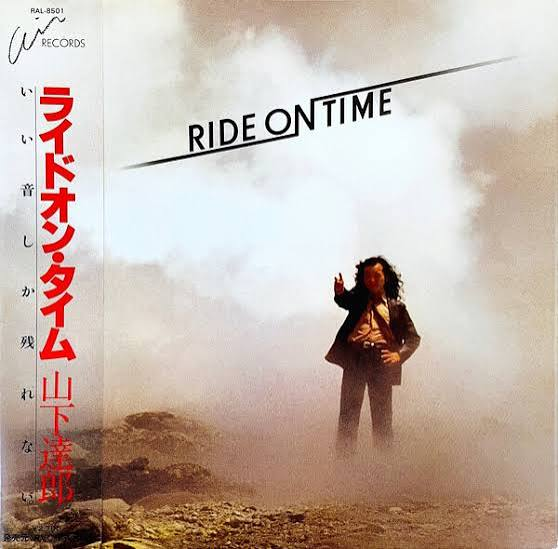
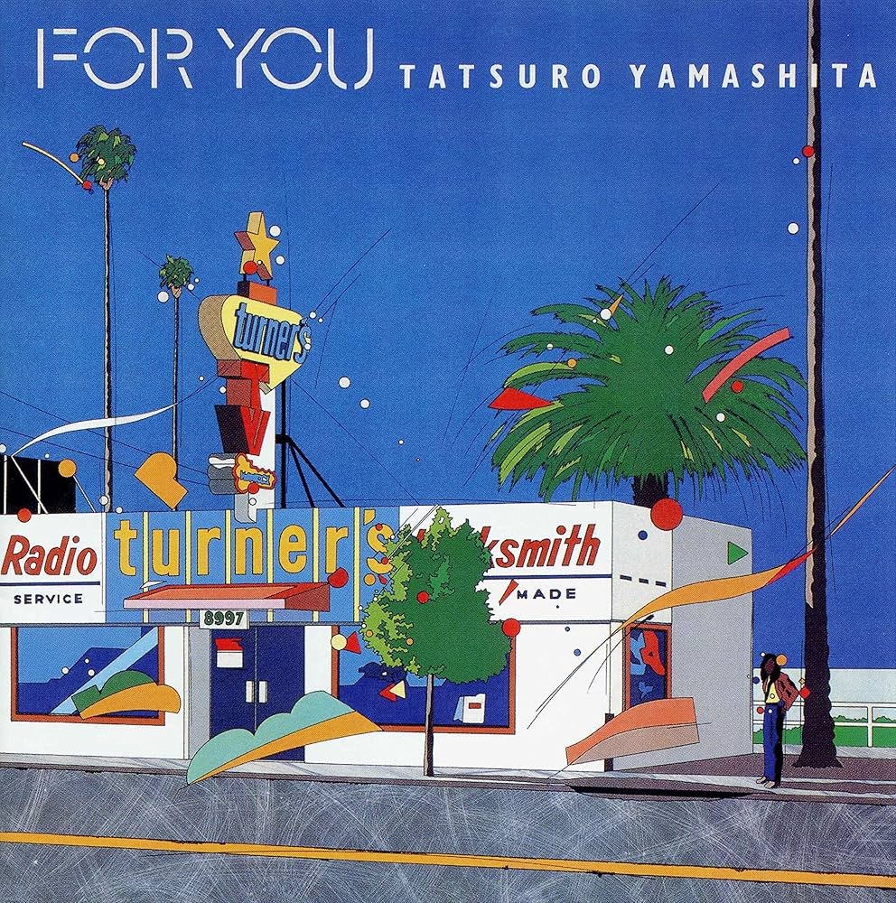
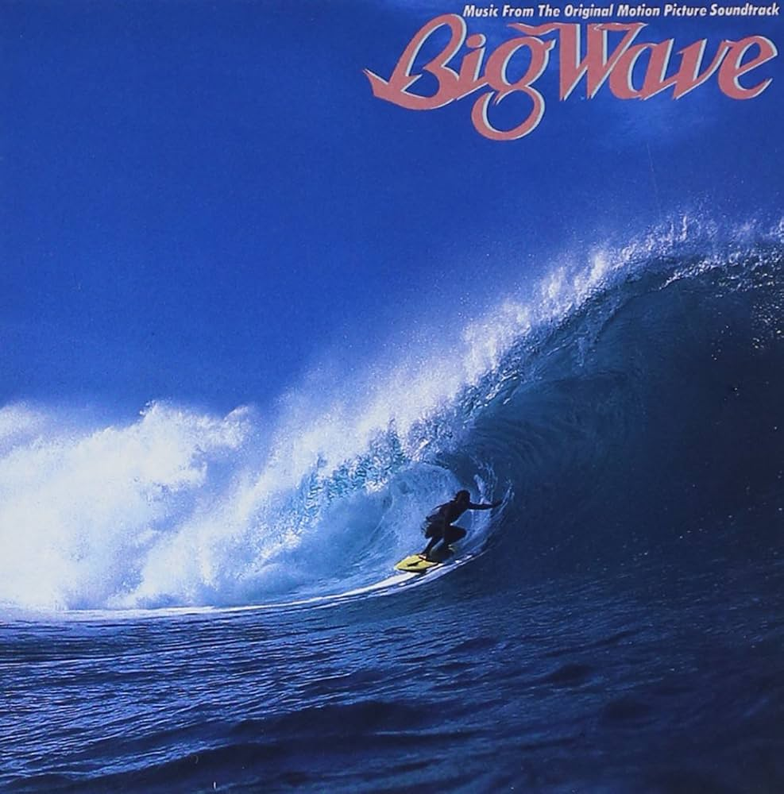

"The things I made and the other things I made ends up here.
Bunch o' useless mini projects that aren't useful at all."
"A bunch of Python mini programs I've made to learn the programming language.
They're nothing special, really. Except the British town name generator (bng.py).
That one's dumb and neat."
"My first website. It's fairly ugly, though."
"I tried graphic design once.
I seem to be so obsessed by Swiss style and brutalism at that time.
Here's what I came up with:"


